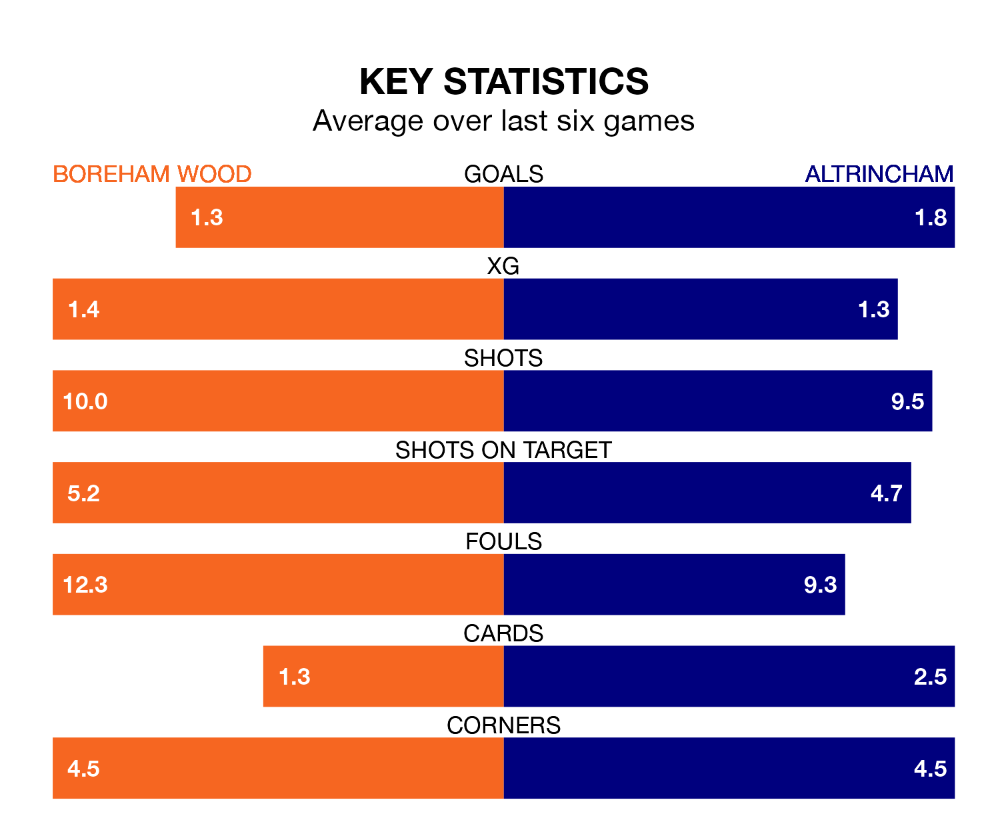

Boreham Wood are on a poor run ahead of hosting Altrincham at Meadow Park on Saturday, with just four points collected from their last six games.
The Wood have picked up one win and one draw in their last six National League games, and face a Robins side whose last six games have brought two wins and four losses.
With 70 goals in 38 games so far this season, Altrincham are the league's joint-second-highest scorers with 1.8 goals per game. And they are conceding fewer than average, letting in 54 goals at a rate of 1.4 per game.
Boreham Wood, meanwhile, are below average scorers, with 1.3 goals per game, compared to a league average of 1.5. They have conceded 1.6 goals per game.
In the last 10 years, Boreham Wood and Altrincham have played each other on nine occasions. They won three each, and they drew three times.
On average, the Wood scored 1.1 goals and Robins 0.9 in those matches.
Their last meeting was on August 19, when they played out a 1-1 draw.
The Wood are 18th in the table after 38 games, of which they have won 10 and drawn 14, earning 44 points.
Robins are 10 places ahead of the home team in eighth, with 16 wins and 10 draws putting them on 58 points.
Boreham Wood's last match was on Tuesday, a 2-0 loss against Solihull Moors.
Altrincham beat York City 6-1 last time out, also on Tuesday, with Alex Newby (two), Christopher Conn, Edward Jones, Jake Southern-Cooper and Justin Amaluzor on the scoresheet.
Updated: 15:10 (UTC), 15/03/24